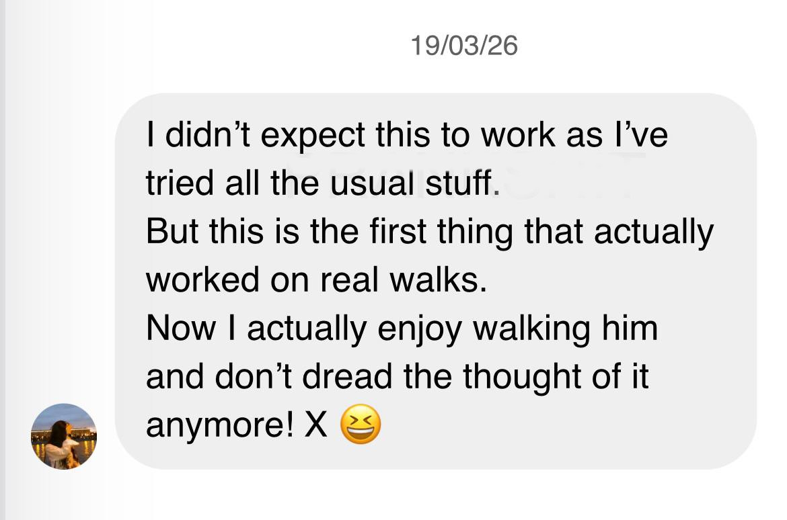

It works at home, then disappears outside
Your dog can look fine in easy places, then go straight back to pulling once the real walk starts.
For dog owners who are tired of being dragged on walks
If walks keep turning into pulling, stopping, redirecting, and getting ignored outside, this shows you what to do differently so the next walk feels calmer, easier, and more like a normal walk again.
Instant-access digital guide with a quick-start plan, printable walk sheet, and simple troubleshooting help.

From owners who thought they had already tried everything.
Why this keeps happening
What looks fine at home can fall apart outside if pulling still gets your dog where they want to go, so the same stressful walk keeps happening again and again.
Your dog can look fine in easy places, then go straight back to pulling once the real walk starts.
Treats, stopping, turning around, and tools can help a bit, but often stop helping once the walk gets messy.
If pulling still gets your dog forward, the next walk teaches the same habit all over again, so nothing really changes and walks keep feeling like a chore.
What you get
Not random tips. A clear plan you can use on the next walk so you stop guessing and stop having the same frustrating walk again.
Plain-English walkthrough of what to change and what to do before your next walk.
A simple page to check before you go out so the walk starts better instead of going wrong straight away.
What to do the moment your dog starts dragging again so pulling stops getting them where they want to go.
So you stop missing the small moments that matter.
What to do when outside is more exciting than food and the walk starts getting away from you.
For dogs who get too wound up around people, movement, or other dogs.
Why this feels different
This is built around the part that usually goes wrong: outside, when walks stop feeling simple.
Your dog is not just being stubborn. They do not know how to walk with you outside yet.
It is built for real walks. Not just what works in the house or garden.
It tells you what to do in the moment. Especially when food gets ignored or the leash goes tight.
Because free advice usually gives you one tip at a time. This gives you the full walk plan in one place, so you are not trying to remember five different things while your dog is already pulling. For £19, it is easier to just have the plan, know what to do, and stop wasting more walks hoping the next free tip will finally fix it.
Every walk you put this off is one more walk that can end in pulling, stopping, and coming home annoyed again.
Get The Easy Walk Reset
The Easy Walk Reset is for dogs who pull, rush ahead, ignore food outside, or get too wound up for the usual advice to keep working.
Format: digital guide + printable walk sheet + quick-reference pages.
Not a bloated course. Not a pile of random tips. Just something you can actually use outside when the walk starts going wrong.
One-time price
£19
Get it nowTry it on your next walk. If it feels like more of the same advice you have already tried, you are covered by the refund policy.
For £19, it is easier to just have it than keep guessing through another bad walk.
FAQ
A digital guide that shows you what to do before the walk, during the walk, and when things start going wrong, so you feel less lost the next time you go out.
Then this is probably for you. It shows why those things help a bit but do not really fix it outside.
Yes. It covers dogs who get too excited outside, ignore treats, or get wound up fast around distractions.